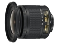

器材库 > APS画幅镜头 > AF-P DX 10-20/4.5-5.6G VR

详细规格
发布日期
2017-05-31
焦距
10mm-20mm
等效35mm画幅焦距
15mm-30mm
最大光圈
f/4.5-5.6
最小光圈
f/22-29
视角（对角）
109° - 70°
镜头结构
14片/11组
非球面镜片
3片
光圈叶片
7片
最近对焦距离
22cm
最大放大倍率
0.17倍
驱动马达
步进马达
滤镜口径
72mm
镜头卡口
Nikon F
防抖
是
颜色
黑色
尺寸
77×73mm
重量
230g
附件
LC-72 72mm搭扣式镜头前盖，LF-4镜头后盖，HB-81卡口式遮光罩，CL-1015镜头套
柯美a5D2018-09-03 12:294.67 分
操作性 5.00耐用性 4.50性价比 5.00解像力 4.50色彩还原 4.50机械结构 4.50
产品图 / 样片
AF-P DX 10-20/4.5-5.6G VR